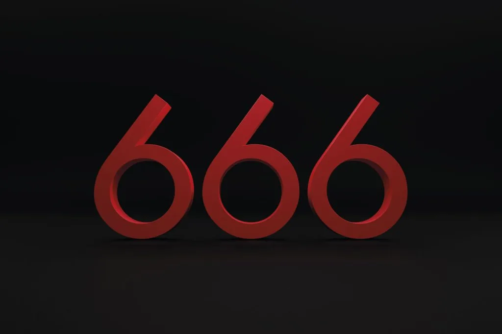

O Significado do Número 666
Apocalipse 13:18
Aqui há sabedoria. Aquele que tem entendimento calcule o número da besta, porque é número de homem; e o seu número é seiscentos e sessenta e seis.
O número do seu nome
O número da besta, diz a profecia, “é número de homem” Se deve ser originário de um nome ou título, é natural concluir que este deve ser o nome ou título de alguma pessoa especial ou representativa. A expressão mais plausível que a nosso ver sugere o número da besta é um dos títulos aplicados ao papa de Roma. Esse título é o seguinte: Vicarius Filii Dei, “Vigário do Filho de Deus.
É digno de nota que a versão da Bíblia de Douay traz o seguinte comentário sobre Apocalipse 13:18:
“As letras numéricas do seu nome compõem este número”. Tirando desse título as letras usadas como numerais romanos, temos:
V = 5 I = 1 C = 100 A R I = 1 U (antigamente, V) = 5 S F I = 1 L = 50 I = 1 I = 1 D = 500 E I = 1 Somando estes números temos 666.
O leitor pode encontar relatos de testemunhas oculares sobre a tiara papal que contém essa inscrição no livro: Considerações sobre Daniel e Apocalipse, de Uriah Smith, no capítulo intitulado: Apocalipse 13 — A Secular Luta Pela Liberdade Religiosa.
O vigário de Cristo na Terra
Temos aqui, com efeito, o numero de um homem, do “homem do pecado”; é e pouco singular,talvez providencial, ele ter escolhido um titulo que mostre o caráter blasfemo da besta, e ter feito inscreve-la na sua mitra, como que se marcando com o número 666.
O extrato precedente refere-se sem duvida a um papa particular numa ocasião particular. Outros papas podem não usar o titulo engastado na mitra, como ali se afirma. Mas isso não afeta a aplicação a todos eles; porque todos os papas pretendem ser o “Vigário de Cristo” (Ver Standard Dictionary, na palavra “vicar”), e as palavras latinas acima apresentadas são as palavras que expressam este titulo, na forma “Vigário do Filho de Deus”; o seu valor numérico é 666.
O papado predito por Paulo
"E, então, será revelado o iníquo, a quem o Senhor consumirá com o espírito da sua boca e destruirá pelo esplendor da sua vinda."
"A esse cuja vinda é segundo a eficácia de Satanás, com todo o poder, e sinais, e prodígios de mentira."
"E com todo engano da injustiça naqueles que perecem, porque não receberam o amor da verdade, para que pudessem ser salvos."
"E, por isso, Deus lhes enviará forte ilusão, para que creiam em uma mentira."
"Para que sejam condenados todos os que não creram na verdade; antes, tiveram prazer na injustiça." 2 Tessalonicenses 2:8-12
O papado predito por Daniel
"E ele falará grandes palavras contra o Altíssimo, e irá consumir os santos do Altíssimo, e intentará mudar tempos e leis; e eles serão dados em sua mão até um tempo, e tempos, e a divisão de tempo."
"Porém, assentar-se-á o julgamento, e eles tomarão o seu domínio para o consumir e o destruir até o final." Daniel 7:25
Hoje o domínio mundial se concentra nas mãoes da igreja romana. Os Estados Unidos da América são o instrumento pelo qual a igreja voltará a ser reconhecida.
A tríplice união
A união da igreja com o estado e com o espiritismo desencadeará as últimas cenas do grande conflito. Essa união gera perseguição ao povo remanescente de Deus, mas segundo a profecia, eles receberão o reino.
"E o reino e domínio, e a grandeza do reino, sob todo o céu, serão dados ao povo dos santos do Altíssimo, cujo reino é um reino eterno; e todos os domínios o servirão e obedecerão.". Daniel 7:27
Assim termina o capítulo 13, deixando o povo de Deus diante dos poderes da Terra em disposição hostil contra ele, e os decretos de morte e banimento da sociedade sobre ele por ter aderido aos mandamentos de Deus. No tempo especificado, o espiritismo estará realizando as suas mais imponentes maravilhas, enganando todo o mundo, exceto os eleitos (Mateus 24:24; 2 Tessalonicenses 2:8-12). Esta será “a hora da tentação”, que há de vir, como prova final, sobre todo o mundo, para tentar os que habitam na Terra, segundo o mencionado em Apocalipse 3:10.
O que está em jogo neste conflito?
Esta importante pergunta não fica sem resposta. Os primeiros cinco versículos do capítulo seguinte completam a cadeia desta profecia e revelam o glorioso triunfo dos campeões da verdade.
👉 'Aquele que tem entendimento 'CALCULE' o número da besta...'
- Essencialista